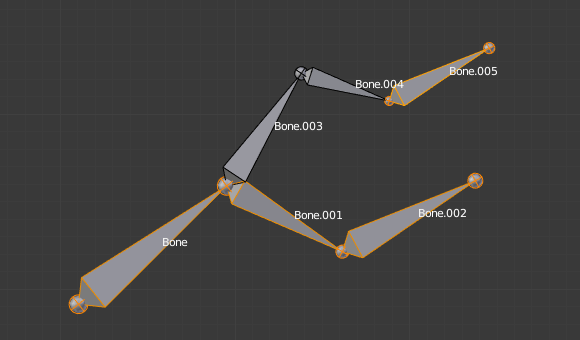
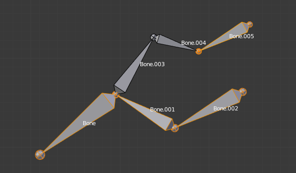

变换¶
变换¶

在编辑模式下的变换属性（ Transform Properties ）面板。
我们不会在这里详细介绍各种骨骼的变换，也没有轴锁定，支点等，因为它们是最常见的对象编辑，并已在这里 mesh section 描述。对于镜像是几乎和网格编辑（ mesh editing ）的一样。只是要记住的是骨骼的首端和尾端或多或少的像网格的顶点，而骨骼本身像网格的边。
正如所知道的那样，骨骼有两种关系：它们是父子关系和连接关系。在 编辑模式 下，父级的骨骼行为就像他们没有任何关系。你可以抓取，旋转，缩放等，父骨不影响其子骨骼。然而，连接骨骼必须有父骨骼尾端连接着子骨骼的首端，所以，当对骨骼进行变换时，将影响所有相连的父骨，子骨等等。
而与其他变换工具，“局部轴”是指物体的轴，这里它们是骨骼自己的轴（当你锁定到局部轴时，通过按相关键两次，约束将沿所选骨骼的局部轴应用而不是骨架物体的轴）。
最后，您可以在属性区域的 Transform（变换） 面板中编辑活动选定骨骼的两个关节的位置和半径，以及滚动旋转（ roll rotation ）。
Scale Radius 球形半径¶
参考
Alt-S您可以通过选择骨骼的头部，身体或尾部来改变骨骼的半径，然后按 Alt-S ，向左或向右移动鼠标。如果选择了身体，意味半径将被缩放。像往常一样，通过相连的骨骼，你可以同时缩放父级的尾端和子级的首端的半径。（封套模式）。
您还可以通过选择要修改的骨骼的尾部或头部来更改骨骼半径，然后导航到 ，并输入新的值在 首端（Tail） 和 尾端（Head） 数字按钮。

在八面锥（Octahedr）显示模式选择的单一骨骼。 |

正常缩放后。 |

在封套（ Envelope）显示模式选择的单一骨骼。 |

缩放半径后其长度保持不变，但其关节的半径较大。 |
需要注意的是当调整骨(通过直接进行缩放，或者通过移动其关节中的一个)大小时，Blender自动校正它的封套的末端半径。因此，建议首先放置所有骨骼，然后才能编辑这些属性。
Scale Envelope Distance 缩放封套间隔¶
参考
Ctrl-Alt-S你可以通过单击要更改的骨骼的主体来更改骨骼封套体积的大小，快捷键 Ctrl-Alt-S ，然后向左或向右拖动鼠标，骨骼封套体积将相应更改。
您还可以通过选择要修改的骨骼来更改骨骼封套体积，然后导航到 然后在其中输入一个新值。
改变骨骼封套体积不会改变骨骼的大小，它只能影响子对象顶点的范围。
|
在封套（ Envelope）显示模式选择的单一骨骼。 |

封套缩放后的距离。 |

在样条骨骼（B-Bone）模式的默认 "骨骼尺寸 "。 |

封套缩放后的距离。 |

对象模式中的相同骨架，样条骨骼（B-Bone）模式，Bone.004的的缩放。 |
Bone Roll 骨骼扭转¶
在 编辑模式 中，可以控制骨骼滚动（即围绕骨骼的Y轴旋转）。
然而，在编辑骨架之后 或当使用欧拉旋转（ euler rotation ）, 你可能想要设置骨骼扭转。
Set Bone Roll 设置骨骼扭转¶
参考
Ctrl-RThis is a transform mode where you can edit the roll of all selected bones.
Recalculate Bone Roll 重新计算骨骼扭转¶
参考
Ctrl-N- Axis Orientation 轴向
- Local Tangent
与骨骼及其父级定义的轴对齐。
X, Z
- Global Axis 全局轴向
对齐滚动（扭转）到全局X，Y，Z轴。
X, Y, Z
- Active Bone 激活骨骼
- 遵循活动骨骼的旋转。
- View Axis 视图轴
- 将滚动设置为与视图对齐。
- Cursor 游标
- 设置滚动朝向3D游标。
- Flip Axis 翻转轴
- 反转轴方向。
- Shortest Rotation 最短旋转
- 避免将骨骼从其当前值滚动超过90度。
Switch Direction 切换方向¶
参考
Alt-F骨架（Armature） 菜单中不提供此工具，只能从按快捷键 W 弹出 专用项（Specials） 菜单。它允许你切换所选骨骼的方向（即它们的首端将成为其尾端，反之亦然）。
切换骨骼的方向通常会破坏它所属的链条。但是，如果你换整个（一部分）链，则切换的骨骼仍将保持父子和链接关系，但是以“相反的顺序”。见图。 Switching example. 切换示例。 。

在切换之前，骨架具有一个选定的骨骼和一个选择的三个骨骼的链。 |

切换了选择的骨骼方向。Bone.005没有了任何的链接和父子关系。而骨骼链切换后仍然存在链接和父子关系，但反转了关系（现在Bone.002是首端，Bone 是它的尾端。）Bone.003现在是一个自由的骨骼。 |
{kind=link}
{kind=link}